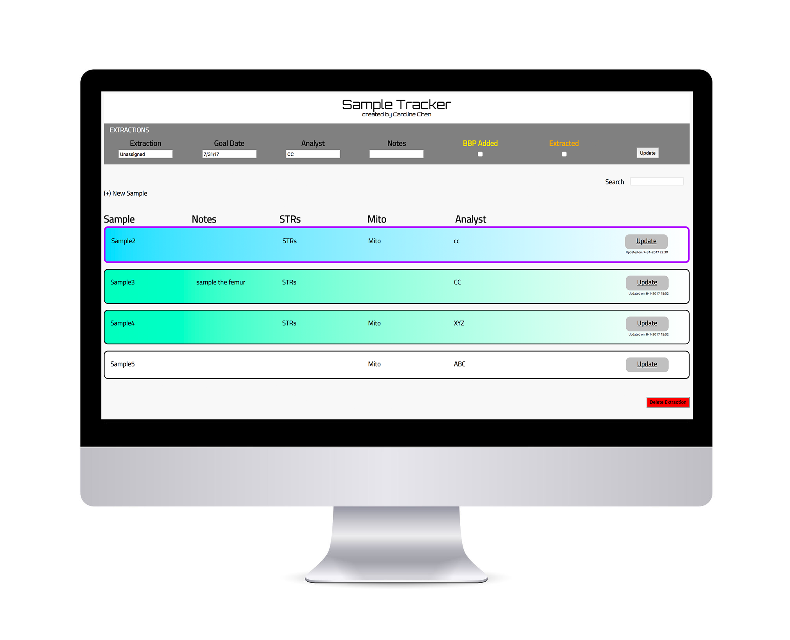
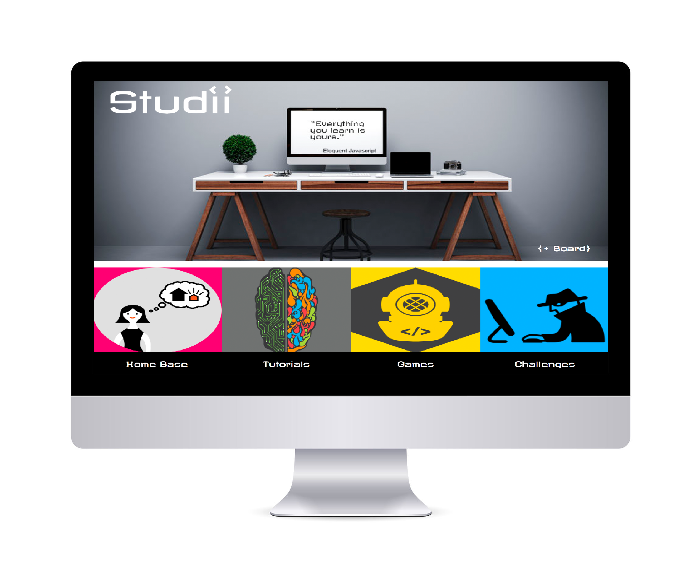
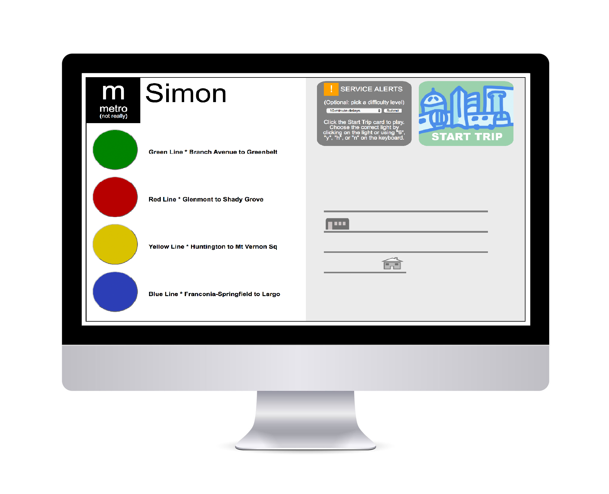

C
a
r
Caroline Chen
I have always been drawn to both logic and art. There is something comforting about knowing that this will result in that, and any problem can be solved if you just have the correct tools and know how to use them. A former forensic scientist, I loved applying critical thinking to solve mysteries and do some social good. However, I realized I needed more art in my life.
There is something freeing in knowing you can create something new, something different in some way from anything else in existence. This love of creation fuels me on a daily basis. I am always working on some project in some fashion.
The desire to combine what I love from science and from art have led me to where I am now: web development. As a developer, I aim to draw on the skills I've gained, never stop learning, and create a positive impact for those around me.

Based on previous experience as a lab scientist, I created a proof-of-concept application to track the progress of samples being processed. The application features an intuitive user interface to allow users to input and edit sample details. Visual cues help users quickly determine next steps in the sampling workflow.
MongoDB, Mongoose, Express.js, AngularJS, Node.js

A full-stack organizational application to easily visualize, organize, and locate saved bookmarks for web development learning tools.
Ruby on Rails

Exercised basic game logic to develop a "Simon" style memory game. Remember the correct sequence to help the game protagonist get home using the Metro!
Javascript

Developed a full-stack application to allow users to create savings accounts, allocate specified amounts into the accounts, and track deposits and withdrawals on the accounts.
MongoDB, Mongoose, Express.js, AngularJS, Node.js

Just for fun, these are some illustrations created purely with HTML and CSS - one div at a time - and a little Javascript to make them dynamic.
CSS, Javascript
n
e
Web Developer